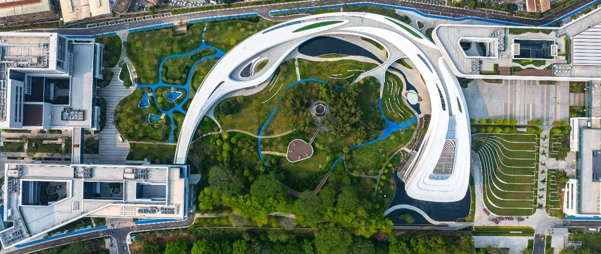

About the workshop
The goal of this workshop is to bring researchers together to provide a forum for exploring recent advances in optimization for AI, as well as the ways in which advances in AI can inform and shape optimization research.
- Dates
- January 3–4, 2027, with registration on January 2 and a half-day excursion on the morning of January 5
- Venue
- Great Bay University (GBU), Songshan Lake Campus, Dongguan, Guangdong, China
- Host
- Center for Intelligent Computing, Great Bay Institute for Advanced Study, GBU
- Sponsors
- Great Bay University and Peking University
- Participants
- About 20 invited researchers (excluding students), roughly half from China and half from abroad
- Tentative topics
- Nonconvex, stochastic and nonsmooth optimization
Schedule
| Saturday, January 2 | Registration (evening) |
|---|---|
| Sunday, January 3 | Talks |
| Monday, January 4 | Talks |
| Tuesday, January 5 | Half-day excursion in the morning; departures in the afternoon |
A detailed program will be posted here once most of the speakers have confirmed.
Confirmed speakers
- Stephen WrightUniversity of Wisconsin–Madison
- Zhaosong LuUniversity of Minnesota
More speakers will be added as they confirm.
Organizers
- Yang LiuCenter for Intelligent Computing, Great Bay University
- Zaiwen WenPeking University; Director, Center for Intelligent Computing, GBU
- Qing LingSun Yat-sen University; Executive Director, Center for Intelligent Computing, GBU
- Fred RoostaUniversity of Queensland
Travel and visa
For invited speakers from abroad, the organizers will cover round-trip economy airfare, accommodation and meals during the workshop.
The nearest airports are Shenzhen Bao'an International Airport (SZX), about 1 hour from the campus by car, and Guangzhou Baiyun International Airport (CAN), about 1.5 hours by car. We will arrange airport pickup from either airport.
On November 3, 2025, the Chinese government extended its visa-free policy for citizens of many countries through December 31, 2026 (list of eligible countries). We will post any extension here. If you need a visa, we will provide a formal invitation letter.
About Great Bay University
Great Bay University is a new public research university in Dongguan, Guangdong, in the Guangdong–Hong Kong–Macao Greater Bay Area. China's Ministry of Education approved its establishment in June 2025. The mathematician Gang Tian, an academician of the Chinese Academy of Sciences, is its founding president. For a short introduction in English, see this China Daily article (December 2025).

Contact
Yang Liu, Center for Intelligent Computing, Great Bay Institute for Advanced Study, Great Bay University — liuy@gbu.edu.cn
Xiao Yi, Center for Intelligent Computing, Great Bay Institute for Advanced Study, Great Bay University — cinco@gbu.edu.cn